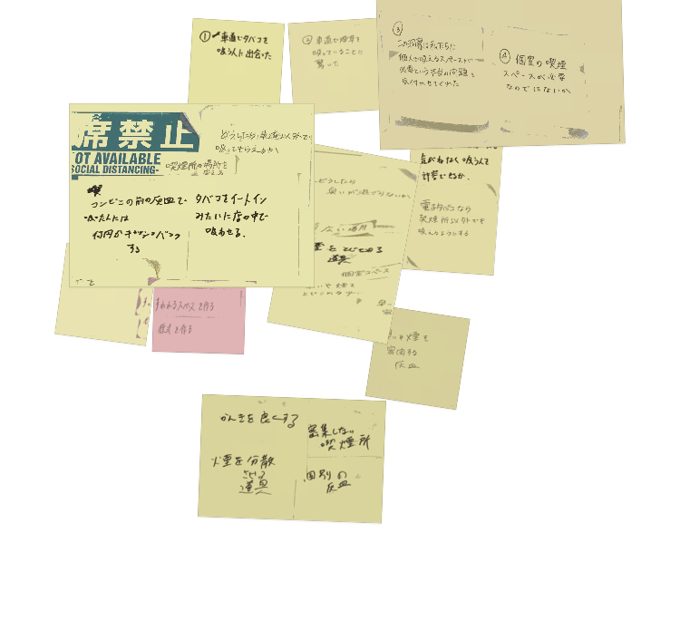
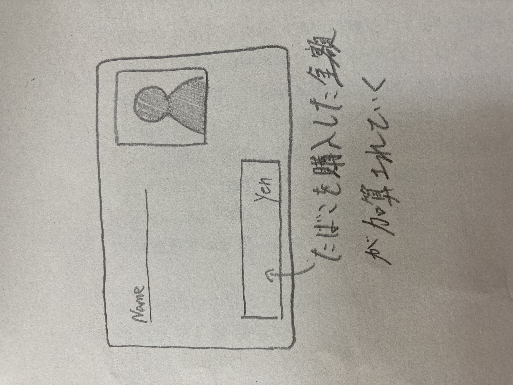
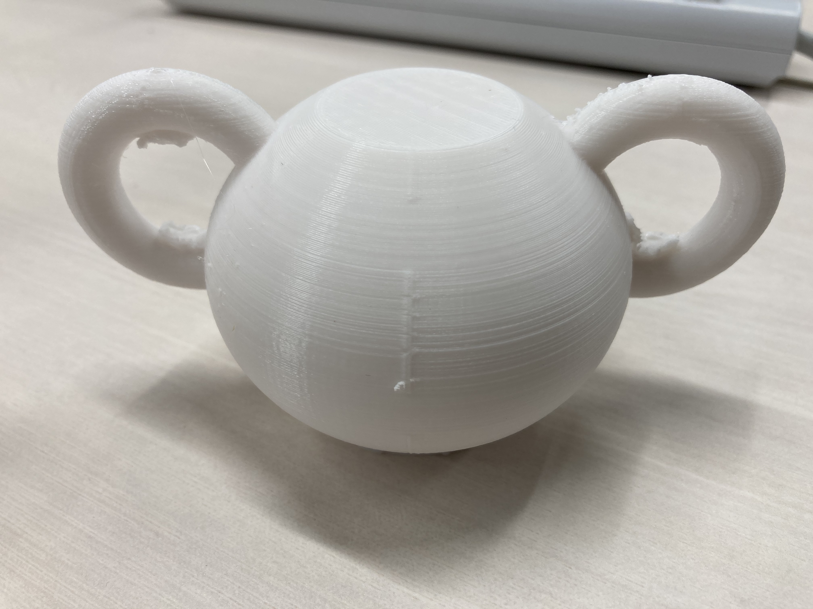
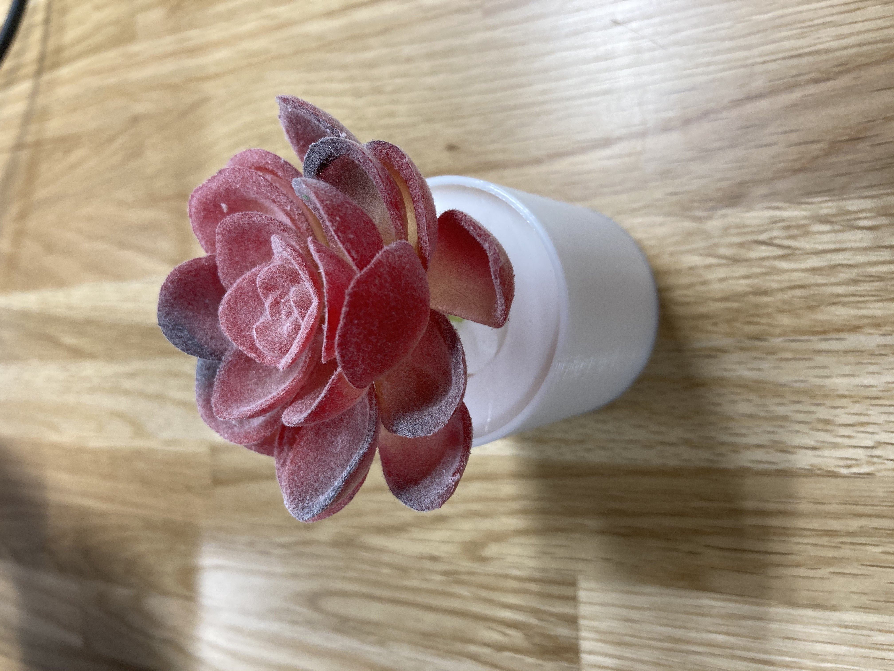
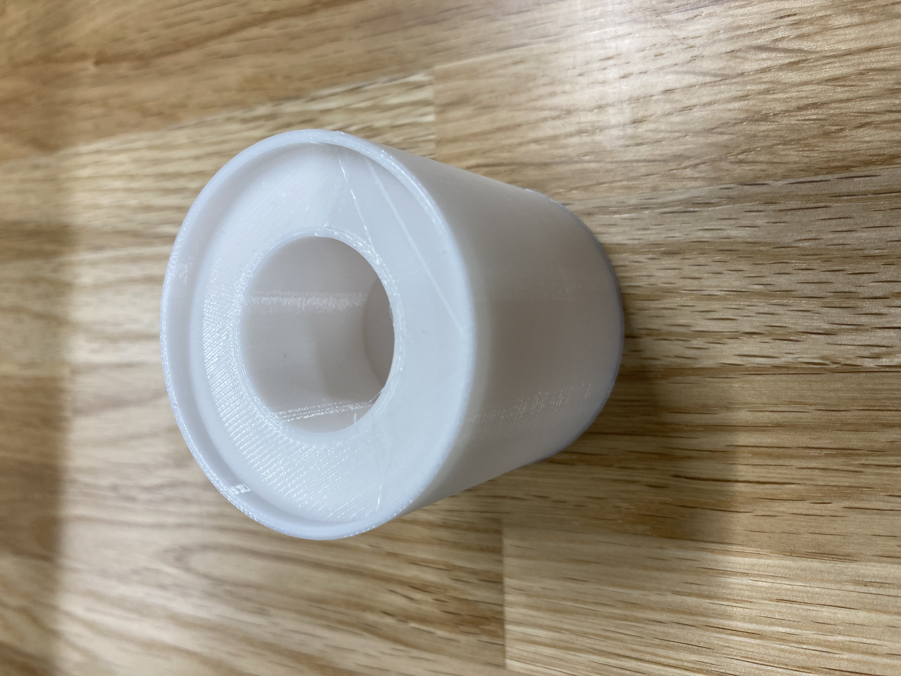

Design for others
11・５ 課題
ターゲット対象 車道でタバコを吸っていた人
POV・HWD
1.私たちは車道でタバコを吸っている人に出会った
2.私たちはコンビニがあるにも関わらず、歩道を通り越した車道でタバコを吸っている事に驚いた。
臭いが混じるのが嫌だったのではないか
いつもと違うところで吸いたかったのではないか
3.この洞察で私たちは個人でタバコを吸えるスペースが必要なのではないか、
喫煙所という概念を変える必要があるのではないかという問題に気づかせてくれた。
4.その人は臭いが混じらない喫煙場所を探している
新しい気分を味わいたい
ポストイット

個人製作
タバコパスポート
これはタバコを吸い始める時にパスポートを作り、タバコをこれから買う時に提示しなければ買えないという
カードです。これは提示して購入するたびに買った金額が加算されていくので、使いすぎている事を毎回見るので
やめようと思うようになると思います。
問題点は今回のように車道で吸っている事自体を止めることにつながらないかもしれません。


変わった灰皿スタンド
これは変わったものは注目されるというところからアイデアを出しました。
車道でタバコを吸う人は逆に目立ちたいからや違うことをしたいという思いがある
→変わったスタンドの前で吸うので注目される
→喫煙場所で吸わせる事ができる
そもそも、タバコを吸わせないように喫煙場所をインスタ映えスッポットのようなイメージで
喫煙場所が新しい意味で注目されれば、普通の人はタバコを吸っているところを注目されて見るのは
嫌だと思うので、禁煙にもつながると思います。
実際に作ったものは、動物型の灰皿スタンドです
こんなところでタバコを吸っていると目立つように作ってみました。

シンプルなので色や模様があるといいとおもいます。
癒しの喫煙場所
これは灰皿スタンドの中に植物やお花を植える事ができるというものです。
植えるものが消臭効果のあるものにするとより良いと思います。
今回の問題ではお花を見ながらタバコが吸えて、植物が多少臭いをの問題をどうにかしてくれるので喫煙場所で吸うようになると思います。
植物やお花を見て、タバコを吸うのを今回はやめようとなってくれると良いとも思います。



黄色のところが吸殻を捨てるところです。